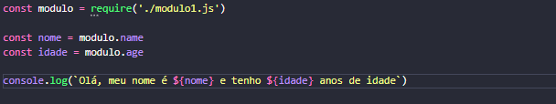
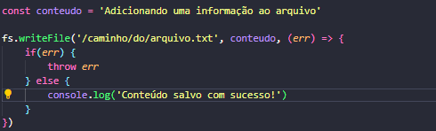

Introdução ao Node.js e NPM
Introdução ao Node
Node é um software baseado no interpretador V8 do Google, permitindo a execução de códigos JavaScript fora de um navegador Web, ou seja, realizar execuções server-side. Possui como principal característica a manipulação DOM, deixando as aplicaçãoes web mais interativas e dinâmicas, além de poder ser implementado com bibliotecas e módulos.
Instalação
Além de ser código aberto e multiplataforma, o Node entrega uma fácil utilização tanto para Windows, Linux e MacOS.
Veja mais detalhes de como instalar o Node para explorar seus recursos.
Módulos
São coleções de funções e objetos JavaScript que podem ser utilizados e reutilizados por outros módulos, podendo realizar interações entre suas variáveis e funções. Os módulos permitem compartilhamento de código dentro da aplicação JavaScript, podendo ser criados pelo programador ou provido de terceiros. Os módulos podem ser de 3 tipos: Internos, Locais e Terceiros
- Internos: Módulos internos são aqueles nativos do Node, ou seja, assim que o baixamos temos esses módulos disponíveis.
- Locais: Módulos locais são criados por nós durante o desenvolvimento de um projeto, dessa forma podemos reutilizar o código em diversos arquivos diferentes, bem como reutilizar em outro projeto.
- Terceiros: Módulos de terceiros são pacotes criados e publicados pela comunidade e por via de regra são disponibilizados no site oficial de pacotes do Node, o NPM.
Exportando e importando módulos
Para exportarmos um módulo, devemos utilizar o método module.exports a atribuirmos a ele o(s) valor(es) a serem exportados.
Dessa forma, estamos exportando "name" e "age" para serem usados publicamente por outros arquivos de código, como mostrado abaixo:
Para importarmos as variáveis do módulo que está sendo exportado, usamos o require() e atribuimos a uma variável. No exemplo, 'modulo' está importando as variáveis de 'modulo1'.js'.
Sistema de Arquivos
Sistema de arquivos nada mais são do que maneiras de manipularmos arquivos através do módulo nativo fs(file system). Este possui funções, como:
- Ler arquivos;
- Criar arquivos;
- Alterar arquivos;
- Renomear arquivos;
Para realizarmos a leitura do conteúdo de um arquivo, utilizamos o método fs.readFile().
No exemplo acima, estamos passando uma função callback, onde será composto por 2 parâmetros: erro e dados do arquivo. Se o caminho estiver correto, o conteúdo será lido, caso contrário, irá disparar um erro.
Para adiconarmos um conteúdo ou criar um novo arquivo com esse conteúdo, utilizamos o método fs.writeFile().
Neste caso, um conteúdo será adiconado para um arquivo já existente, se o caminho estiver correto. Este método sobrescreve o conteúdo anteriormente escrito no arquivo. Caso o arquivo não exista, um novo será criado com esse conteúdo.
Para excluirmos um arquivo, utilizamos o método fs.unlink().
Para este método, os argumentos são: nome do arquivo e callback de erro.
Para renomearmos um arquivo, devemos utiliar o fs.rename().
O método possui como argumentos: nome do arquivo, novo nome do arquivo e callback de erro.
NPM - Node Package Manager
NPM é o repositório oficial das publicações Node, ele funciona como um gerenciador de pacotes do Node, sendo esses disponibilizados para desenvolvedores.
Instalação de Pacotes
O NPM vem junto com a instalação do Node. Para realizar a instalação do NPM juntamente ao Node.js clique aqui. Para certificar que o Node está instalado, basta abrir o Prompt de Comando e digitar o comando: npm --version.

Apresentando a versão do NPM, está tudo certo e o gerenciador está instalado na máquina.
Gerenciamento de dependências
Em uma aplicação back-end sempre trabalhamos com as dependências, sejam elas para criação de servidores, templates ou outras utilidades. Para usarmos uma dependência NPM, devemos digitar o comando com a devida sintaxe:
npm install (nome-da-dependência)
Neste exemplo, estamos instalando o Express, framework usado para criação de servidor.
Ao ser instalado uma dependência, será criado o Package.json, um arquivo que armazena todas as dependências com suas respectivas versões em objeto JSON. Além disso, também é adicionado uma pasta com o nome 'node-modules', contendo todos os códigos fontes da dependência instalada.
Por convenção, iniciamos um projeto com o comando 'npm init-y', onde criará um formulário contendo informações sobre o projeto como nome, versão, descrição e arquivo principal.
Aqui está um exemplo da instalação das 3 dependências do Express, Nodemon e Body-Parser e como fica descrito no Package.json.
Há diversas outras dependências disponíveis, afinal, o NPM foi criado para deixar os códigos mais robustos e dinâmicos. Cabe ao desenvolvedor saber selecionar os pacotes ideais para o projeto ou aplicação WEB em que ele construirá.